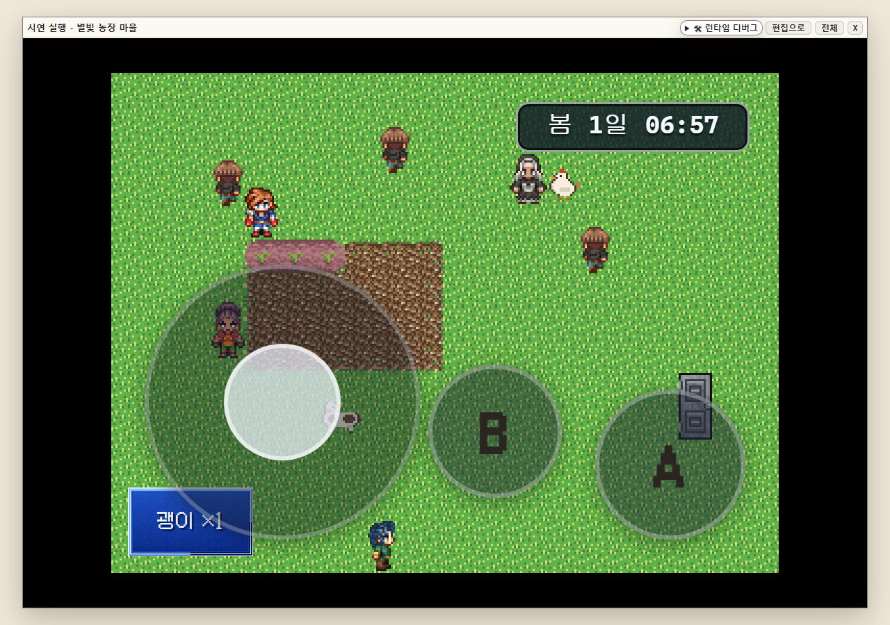

생활
기존 ‘수집’
스타듀풍 생활 콘텐츠를 묶는 상위 분류로 의미를 명확히 했습니다.
Stardew-style content pass · complete
모호했던 분류명을 생활 콘텐츠 중심으로 고치고, 작물·주민·몬스터 데이터를 실제 농사·선물·광산 루프까지 연결했습니다.

01 · What changed
메뉴 이름은 역할을 설명하고, 각 화면 상단의 준비 상태는 “플레이하려면 다음에 무엇이 필요한지” 보여줍니다.
스타듀풍 생활 콘텐츠를 묶는 상위 분류로 의미를 명확히 했습니다.
씨앗, 수확물, 계절, 성장 단계, 재수확까지 한 흐름으로 연결했습니다.
생일, 선호 선물, 반응 대사와 실제 호감도 상승을 채웠습니다.
광산 스폰 → 적 그룹 → 종족 → 드롭 보상의 끊긴 연결을 닫았습니다.
농사 행동과 수면을 포함한 하루 진행 루프를 실제 플레이로 검증했습니다.
02 · Editor database
03 · Farming E2E
화면만 채운 것이 아니라 런타임에서 밭 3칸을 갈고, 감자를 심고, 물을 주고, 날짜를 넘겨 수확했습니다. 이미지를 누르면 크게 볼 수 있습니다.
05 · Mine & monsters
박쥐와 골렘이 각 스폰 영역에서 생성되고, 광석 채굴 뒤 농장으로 돌아오는 경로까지 이어집니다.
06 · QA evidence
두 해상도의 에디터 캡처와 실제 런타임 시나리오를 남겼고, Supabase 저장 후 같은 project id로 재로드했습니다.
1440×900, 1024×768에서 작물·주민·몬스터 화면 확인
갈기 → 심기 → 물주기 → 성장 → 수확 통과
수면·다음 날·상점 구매/판매 흐름 통과
입장·스폰·채굴·농장 귀환 통과
선호 선물 반응과 호감도 +80 통과
집중 단위 71개, 빌드, SDK, OpenWiki 확인
저장된 행을 project id로 다시 읽고 저작 수치 일치 확인
타입 오류 0, 기준선 대비 신규 회귀 0
대화 중 터치패드가 선택지를 가리는 문제 수정
rpg-zzu-stardew-demosaved · reloaded: true작물 8 · 주민 5 · 광산 스폰 2 · 선물 시스템 true7f0726e934e4cfcfb100694cb092456fa4727edb2546298d02a2c39edf20a1cd전체 게이트의 기존 실패는 잔존하지만, 이번 변경으로 추가된 실패는 0Final verdict
분류명 정리, 콘텐츠 보강, 실제 플레이 연결, Supabase 저장·재로드, Visual QA와 E2E 증거까지 한 세트로 닫혔습니다.
04 · Relationship loop
‘캐릭터 목록’이 아니라
관계가 변하는 주민
각 주민은 생일과 선물 취향, 상황별 반응 대사를 갖습니다. 광부 도윤에게 선호 아이템인 철 광석을 건네 실제 호감도 상승까지 확인했습니다.